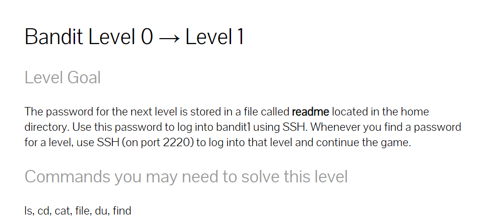
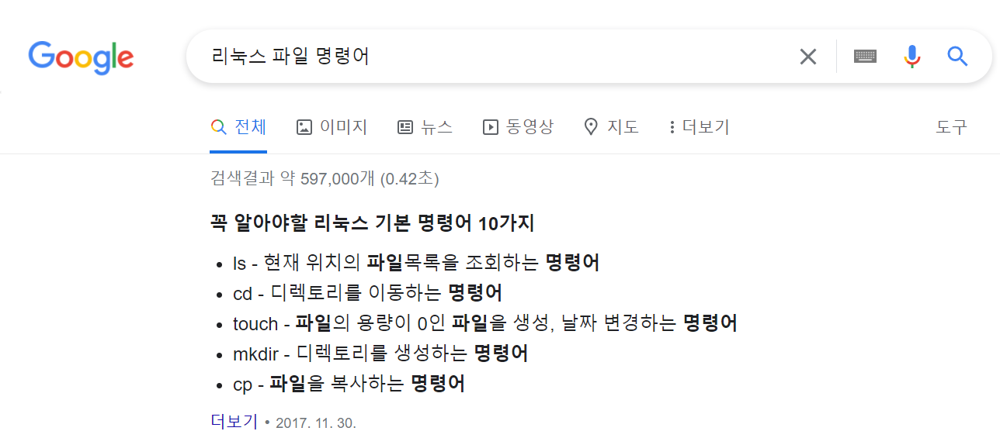
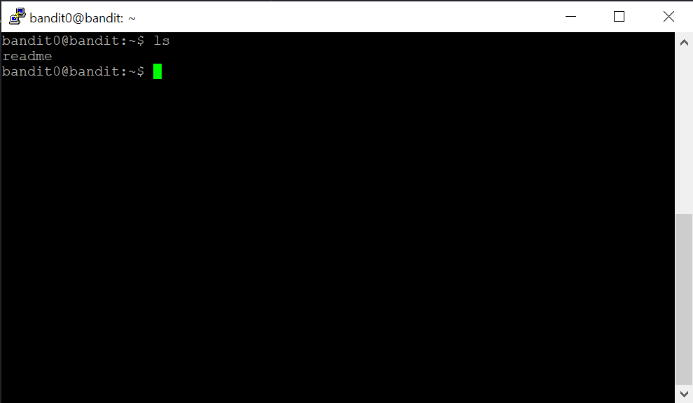
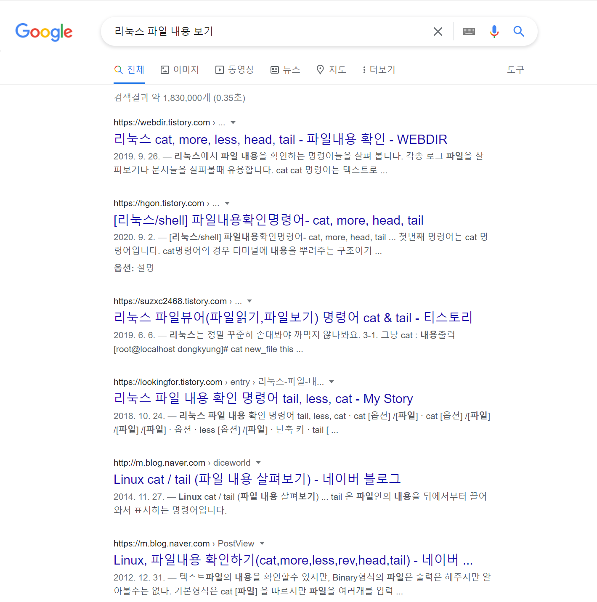
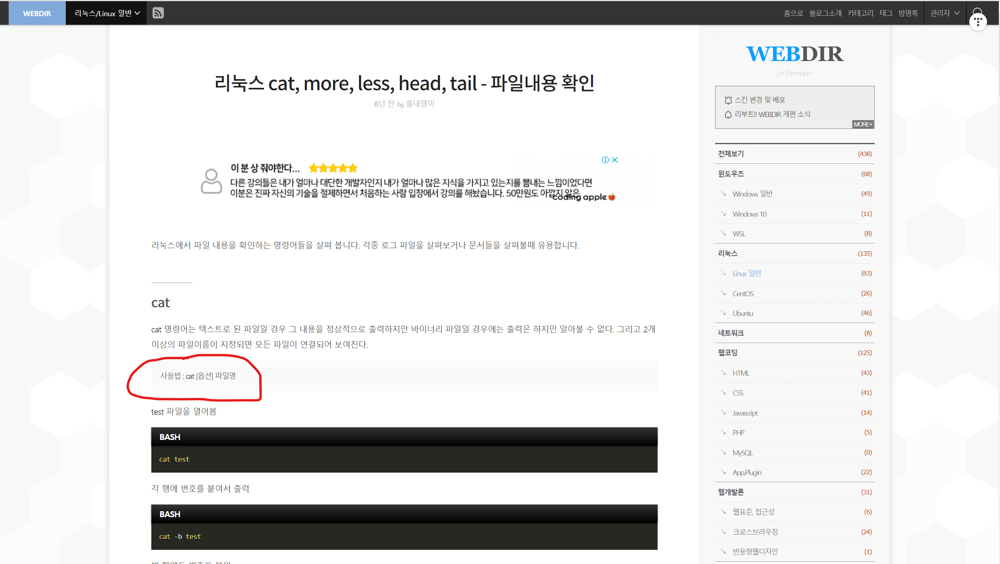
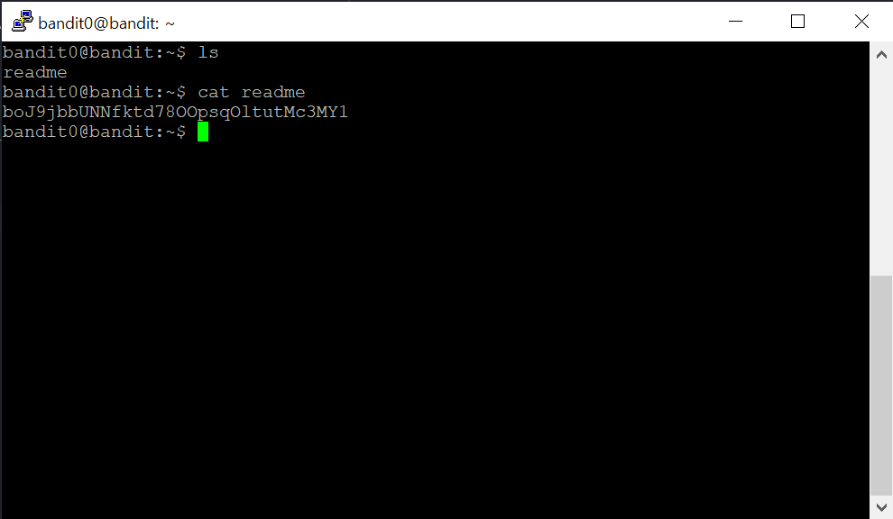
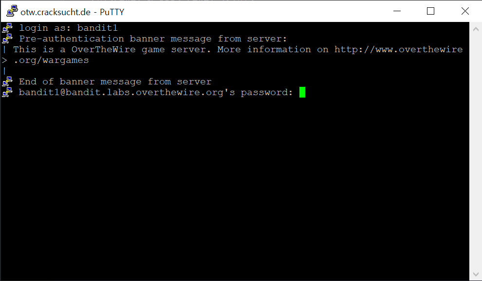
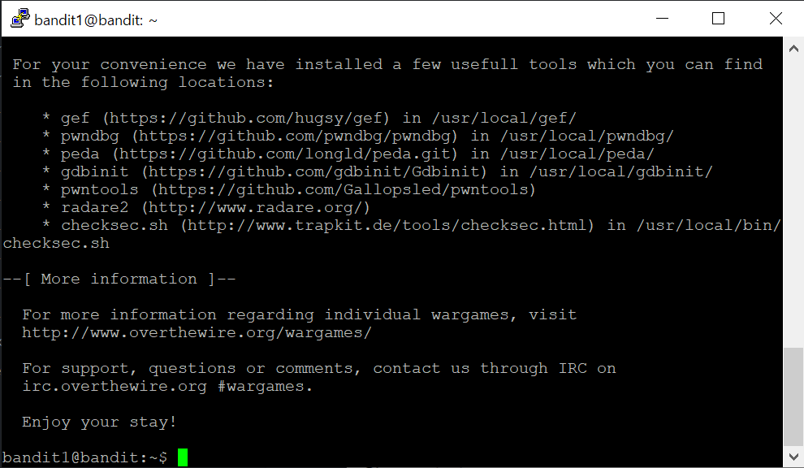

문제를 해석해 보니 다음 레벨의 패스워드는 readme 라는 파일에 있다고 하네요.
거기서 찾은 패스워드를 사용해서 bandit1로 로그인하면 된다고 합니다. 우선 저 파일이 있는지 먼저 살펴봐야겠죠?
그러기 위해 Google에 "리눅스 파일 명령어"라고 검색해보았습니다.

ls 명령어를 사용하면 파일 목록을 조회 할 수 있다고 합니다. 바로 한 번 해보겠습니다.

저기에 readme라는 파일이 있네요. 그런데 저 파일내용을 어떻게 해야 볼 수 있을까요? Google에 "리눅스 파일 내용 보기"라고 검색해 보겠습니다.

이렇게 많은 검색 결과중에서 맨 처음에 있는 '파일내용 확인' 이라는 단어를 보고 들어갔습니다.

들어가보니, 사용법: cat [옵션] 파일명부분이 눈에 띄었고, 옵션은 따로 줄게 없기 때문에 곧장 실행해 봤습니다.

그랬더니 바로 다음 레벨의 패스워드가 뜨더군요. 맞는지 확인해 봐야겠죠? exit를 통해서 putty에서 나가 준 다음 다시 접속하여 이번에는 bandit1로 로그인해 봅시다.

여기에 아까 그 패스워드를 붙여넣기하면..... 아 맞다! 참고로 여기에서 패스워드를 입력해도 저희에겐 보이지 않아요! 이곳에 패스워드를 입력하면...!

bandit1로 로그인 성공했네요! 그럼 다음 문제 풀러 가볼까요?